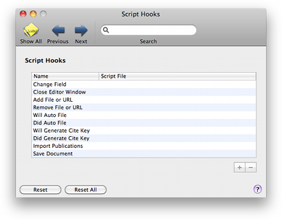

Script Hooks Script Hooks
Script Hooks Script HooksThe Script Hooks pane lets you add AppleScript automated tasks to BibDesk. See Script Hooks for more information.

Script Hooks: The table lists the names of all supported script hooks. You can attach an AppleScript script file to a script hook by selecting an empty Script Hook and pressing the "+" button, or by double clicking the item in the table. You can remove a Script Hook by selecting the item in the table and pressing the "-" button.